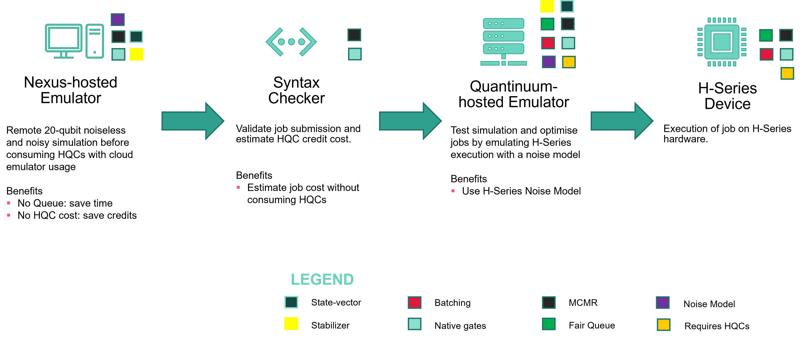

Quantinuum Emulators¶
An emulator can be used model hardware execution. This enables debugging and optimization before running on a physical machine. Emulators differ from simulators in that they model the physical and noise model of the device whereas simulators may model noise parameters, but not physical parameters.
The Quantinuum emulators run on a physical noise model specific to Quantinuum systems. There are various noise/error parameters modeled. For detailed information on the noise model, see the noise model for System Model H1 and System Model H2.
State vector Emulator: The default mode of all emulators. The emulator will compute the state vector of the circuit and estimate the measurement distribution from that state vector. (option:
state-vector)Stabilizer Emulator: Use of the emulator for circuits involving only Clifford operations. This is only available on cloud emulators (option:
stabilizer)Nexus-hosted Emulators: 20-qubit instances of Quantinuum emulators are hosted in Nexus. The
HX-Emulator(Xis an integer specifying machine generation) targets enablestate-vectorandstabilizeremulation whilst including the physical noise model of the Quantinuum device. Emulator targets ending withLEenable noiseless (state-vector) emulation, which means that only shot-noise is included in the job result.Noise Model Customization: Experiment with the noise parameters in the emulator. There is no guarantee that results achieved by changing these parameters will represent outputs from the actual quantum computer represented. This is not available for emulator targets ending in
LE.
{kind=link}
Emulator Availability and Usage¶
All Quantinuum machines have noisy emulators (suffix E or Emulator) and noiseless emulators (suffix LE). The Emulator targets with suffix Emulator or LE are hosted on nexus, but with the total number of qubits capped at 20-qubits.
Users can access noisy emulators with their Quantinuum credentials over the cloud via the Fair Queue. These emulators are hosted in the Quantinuum stack, consume HQCs upon usage, are available 24/7, and replicate hardware noise characteristics unless the user utilizes the noise model options.
User can also access nexus-hosted emulators without submitting to a Fair Queue or consuming HQCs. The emulators with suffix LE only provide noiseless state-vector emulation modeling physical characteristics like transport, but not noise. The user submits to a first-in first-out queue, operated within Nexus.
For smaller noiseless emulations involving less than 16 qubits, it is recommended to use the nexus-hosted emulators. For larger emulations, or emulations using a noise model, cloud emulators is recommended.
All emulators provide the following features:
Usage of arbitrary-angle two-qubit gates as well as other native Quantinuum gates
All-to-all connectivity
Mid-circuit measurements and reset (MCMR) and qubit reuse
Identical number of qubits to the corresponding device (see emulator datasheets). Nexus-hosted emulators are capped at 20-qubits.
Noisy Emulators provide the following capabilites:
A noise model replicating device noise characteristics
state-vectorandstabilizersimulators.State-vectorsimulators have up to 32 qubits.Stabilizersimulator has up to 56 qubits.
Emulators hosted in the Quantinuum stack provide the following features:
Job Batching (run all jobs by a user in succession)
Quantinuum-hosted Emulators can only be accessed via the Fair Queue. Queue time is dependent on HQC accumulation and user- and group-priorities within their organization. Emulator run-time is dependent on the number of qubits and number of operations in the job. Noisy emulations are slower than noiseless emulations.
Jobs submitted to the Quantinuum-hosted emulator with a high shot count are automatically chunked into multiple partitions with fewer shots. This enables an incremental distribution of emulator resources.
{kind=link}
Basic Usage¶
In the cell below, a qnexus project is retrived from the nexus database and set as the active-project throughout the lifetime of the python session. A backend configuration uses device_name argument to target a nexus-hosted emulator (H1-Emulator). The qnexus is used to perform the following workflow:
Compile job to transform the quantum program to satisfy the gate set predicate for the emulator using the instance
qnexus.start_compile_jobmethod.Execute job to submit the circuit for emulation via
qnexus.start_execute_job.Check job status for the submitted circuit with
qnexus.jobs.statusmethod.Retrieve job result after emulation with
download_resultmethod on theqnexusresult reference.
This workflow is identical for both Quantum Processing Unit (QPU) usage and emulator usage.
This workflow is the default (and simplest) for the Quantinuum emulators. In most cases, we recommend users use this workflow since it will mimic device performance.
import qnexus
project = qnexus.projects.get_or_create(name="Emulator-Demonstration")
qnexus.context.set_active_project(project)
config = qnexus.QuantinuumConfig(device_name="H1-Emulator")
import datetime
job_name_suffix = datetime.datetime.now().strftime("%Y_%m_%d-%H_%M_%S")
job_name_suffix
The 4-qubit circuit below contains the following features:
Native arbitrary-angle two-qubit gate (
OpType.ZZPhase)Native arbitrary-angle one-qubit gate (
OpType.PhasedX)MCMR (mid-circuit measurement with reset)
Classically-controlled
OpType.Xoperation
from pytket.circuit import Circuit
from pytket.circuit.display import render_circuit_jupyter
circuit = Circuit(4, 1)
for i, j in zip(circuit.qubits[:-1], circuit.qubits[1:]):
circuit.ZZPhase(0.1, i, j)
# Add MCMR
circuit.Measure(circuit.qubits[-1], circuit.bits[0])
circuit.Reset(circuit.qubits[-1])
circuit.X(circuit.qubits[-1], condition=circuit.bits[0])
for i, j in zip(circuit.qubits[:-1], circuit.qubits[1:]):
circuit.ZZPhase(0.1, i, j)
for i in circuit.qubits:
circuit.PhasedX(0.06, -0.09, i)
## Add Final Measurement
circuit.measure_all()
render_circuit_jupyter(circuit)
ref_circuit = qnexus.circuits.upload(circuit=circuit, name="circuit-1")
Compiling the circuit, replaces the classically-controlled OpType.X operation with an OpType.Phase node and a classically-controlled Optype.PhasedX.
ref_compile_job = qnexus.start_compile_job(
circuits=[ref_circuit],
name=f"compile-simple-circuit-{job_name_suffix}",
backend_config=config,
optimisation_level=2
)
qnexus.jobs.wait_for(ref_compile_job)
job_result = qnexus.jobs.results(ref_compile_job)[0]
compilation_result_ref = job_result.get_output()
compiled_circuit = compilation_result_ref.download_circuit()
from pytket.circuit.display import render_circuit_jupyter
render_circuit_jupyter(compiled_circuit)
qnexus.start_execute_job is used to submit the compiled circuit for emulation to the nexus-hosted emulator.
execution_ref = qnexus.start_execute_job(
circuits=[compilation_result_ref], # <- Don't have to download, can just use the reference.
name=f"execution-simple-circuit-{job_name_suffix}",
backend_config=config,
n_shots=[100],
)
qnexus.jobs.wait_for(execution_ref)
qnexus.jobs.status(execution_ref)
result = qnexus.jobs.results(execution_ref)[0].download_result()
result.get_distribution()
State vector and Stabilizer Emulator¶
The following options can only be used when using the cloud Quantinuum emulators (ending with E and not LE).
There are two types of simulation methods, state-vector and stabilizer. These can be specified during construction of qnexus.QuantinuumConfig via the simulator keyword argument. The default value is state-vector.
{kind=link}
If the quantum operations are all Clifford gates, it is faster to use the stabilizer emulator. The stabilizer emulator is requested in the setup of the qnexus.QuantinuumConfig with the simulator input option. This option can only be used with noisy Quantinuum emulators.
machine = "H1-Emulator"
stabilizer_config = qnexus.QuantinuumConfig(device_name=machine, simulator="stabilizer")
circuit2 = Circuit(2).CX(0, 1)
ref2 = qnexus.circuits.upload(circuit2, name="circuit2")
ref_compile2 = qnexus.start_compile_job(
circuits=[ref2],
name=f"compile-simple-circuit-2-{job_name_suffix}",
backend_config=config,
optimisation_level=2
)
qnexus.jobs.wait_for(ref_compile_job)
compiled_circuit = job_result.get_output().download_circuit()
from pytket.circuit.display import render_circuit_jupyter
render_circuit_jupyter(compiled_circuit)
Noiseless Emulation¶
Enabling and Disabling the Error Model with the Cloud Emulators¶
Quantinuum emulators may be run with or without the physical device’s noise model. The default is the emulator runs with the physical noise model turned on. The physical noise model can be turned off by setting noisy_simulation=False. Noiseless simulation can be used with both state-vector and stabilizer emulator.
import qnexus
config_noiseless_1 = qnexus.QuantinuumConfig(device_name="H1-Emulator", noisy_simulation=False)
Noiseless Emulation using Quantinuum Emulators with LE suffix¶
There are emulator targets with the LE suffix hosted in nexus. Each target corresponds to a Quantinuum machine.
config_le_emulator = qnexus.QuantinuumConfig(device_name="H1-1LE")
Noise Model Customization¶
The emulator runs with default error parameters that represent a noise environment similar to the physical devices. For detailed information on the noise model, see the product data sheet for the device you want to emulate on the System Model H1 or System Model H2 page.
The UserErrorParams object can be used to customize the noise model. This can be supplied to the QuantinuumConfig constructor with a keyword argument error_params.
In this section, examples are given for experimenting with the noise and error parameters of the emulators. These are advanced options and not recommended to start with when doing initial experiments. As mentioned above, there is no guarantee that results achieved changing these parameters will represent outputs from the actual quantum computer represented.
Note: All the noise parameters are used together any time a simulation is run. If only some of the parameters are specified, the rest of the parameters are used at their default settings. The parameters to override are specified with the options parameter.
The example below specifies the options with the QuantinuumConfig constructor.
import qnexus
from quantinuum_schemas.models.h_series_noise import UserErrorParams
user_error_params = UserErrorParams(
quadratic_dephasing_rate=0.1
)
config = qnexus.QuantinuumConfig(device_name="H1-Emulator", error_params=user_error_params)
Physical Noise¶
See the product data sheet for the device you want to emulate for information on these parameters.
user_error_params = UserErrorParams(
p1=4e-5,
p2=3e-3,
p_meas=3e-3,
p_init=4e-5,
p_crosstalk_meas=1e-5,
p_crosstalk_init=3e-5,
p1_emission_ratio=0.15,
p2_emission_ratio=0.3
)
config = qnexus.QuantinuumConfig(device_name="H1-Emulator", error_params=user_error_params)
Dephasing Noise¶
The noise model includes a memory error for which Pauli-\(Z\) is applied. This is often called “dephasing” or “memory” noise. There are two relationships between the probability of dephasing error and the duration for which qubits are idling or transporting in the trap:
the probability is quadratically dependent on the duration
the probability is linearly dependent on the duration
For both the state-vector and stabilizer simulations, linear dephasing is also modeled with Pauli-\(Z\) applied with a probability equal to rate, \(r\), multiplied by duration, \(d\).
For state-vector simulations, the quadratic noise is modeled in the emulator by default as coherent noise. For this coherent quadratic dephasing noise, the \(Rz\) gate is applied with an angle proportional to frequency, \(f\), multiplied by duration, \(d\). The probability of the \(Rz\) gate applying a Pauli-\(Z\) operation on a plus state, \(| + \rangle\), is \(\sin( fd/2 )^2\), which is why we call this a form of quadratic dephasing.
For the stabilizer simulator, by default this quadratic noise is modeled incoherent by applying Pauli-\(Z\) with probability \(\sin{(fd)}^2\) to model more closely the quadratic dependency with frequency and time as seen in the coherent model. Note, stabilizer simulations can only simulate Clifford and measurement-like gates, so the \(Rz\) gate cannot be applied directly.
See the product data sheet for the device you want to emulate for information on these parameters.
user_error_params = UserErrorParams(
quadratic_dephasing_rate=0.2,
linear_dephasing_rate=0.3,
coherent_to_incoherent_factor=2.0,
coherent_dephasing=False,
transport_dephasing=False,
idle_dephasing=False
)
config = qnexus.QuantinuumConfig(device_name="H1-Emulator", error_params=user_error_params)
Arbitrary Angle Noise Scaling¶
The System Model H1 systems have a native arbitrary-angle \(ZZ\) gate, \(RZZ(\theta)\). For implementation of this gate in the System Model H1 emulator,
certain parameters relate to the strength of the asymmetric depolarizing noise. These parameters depend on the angle \(\theta\). This is normalized so
that \(\theta=\pi/2\) gives the two-qubit fault probability (p2). The parameters for asymmetric depolarizing noise are fit parameters that fit the
noise estimated as the angle, \(\theta\), changes per this equation:
The parameters for asymmetric depolarizing noise are fit parameters that fit the noise estimated as the angle, \(\theta\), changes per this equation:
\begin{align} (przz_a (|\theta|/\pi)^{przz_{power}} + przz_b) p2; \quad &\theta &< 0 \
(przz_c (|\theta|/\pi)^{przz_{power}} + przz_d) p2; \quad &\theta &> 0 \
0.5 (przz_b + przz_d); \quad &\theta &= 0 \end{align}
See the product data sheet for the device you want to emulate for information on these parameters.
user_error_params = UserErrorParams(
przz_a=1.09,
przz_b=0.035,
przz_c=1.09,
przz_d=0.035,
przz_power=0.5
)
config = qnexus.QuantinuumConfig(device_name="H1-Emulator", error_params=user_error_params)
Scaling Factors¶
A scaling factor can be applied that multiplies all the default or supplied error parameters by the scaling rate. In this case, 1 does not change the error rates while 0 makes all the errors have a probability of 0.
All the error rates can be scaled linearly using the scale parameter.
user_error_params = UserErrorParams(
scale=0.1
)
config = qnexus.QuantinuumConfig(device_name="H1-Emulator", error_params=user_error_params)
See the product data sheet for the device you want to emulate for information on these parameters.
user_error_params = UserErrorParams(
p1_scale=0.1,
p2_scale=0.1,
meas_scale=0.1,
init_scale=0.1,
memory_scale=0.1,
emission_scale=0.1,
crosstalk_scale=0.1,
leakage_scale=0.1
)
config = qnexus.QuantinuumConfig(device_name="H1-Emulator", error_params=user_error_params)
Use Case: Noise Model Analysis¶
The noise model can be configured on the state-vector simulator in order to assess performance improvements for a particular use case as certain hardware noise parameters (i.e. the two-qubit gate fidelity improves).
This use case looks at the Jensen-Shannon divergence (JSD) as the p2 noise model value is modified. JSD is a measure of result quality, 0 is the maximal quality and 1 is the worst. A random circuit is submitted to the emulator for 5 different values of p2. The JSD can be computed once results are available from the noisy emulation. Emulation results are compared to results from an ideal case, and this is a benchmark for similarity between the two measurement distributions.
The code cell below generates 5 p2 values between 0 and 0.1.
import numpy as np
p2_list = np.linspace(0, 0.1, num=5, endpoint=True)
The code below generates a 10-qubit circuit with 10 repeating sub-blocks. Each sub-block contains OpType.PhasedX and OpType.ZZPhase operations.
from pytket.circuit import Circuit
circuit = Circuit(10)
for i in range(10):
for j, qubit in enumerate(circuit.qubits):
a0 = j * 0.05**i
a1 = j * 0.1**i
circuit.PhasedX(a0, a1, qubit)
for j, (q0, q1) in enumerate(zip(circuit.qubits[:-1], circuit.qubits[1:])):
angle = 0.1**i
circuit.ZZPhase(0.1, q0, q1)
circuit.measure_all();
ref_nma = qnexus.circuits.upload(circuit, name="nma-circuit")
The local (noiseless) emulator, H1-1LE, is used to obtain a distribution of measurement outcomes in the ideal case.
noiseless_config = qnexus.QuantinuumConfig(device_name="H1-1LE")
ref_compile_job_nma = qnexus.start_compile_job(
name=f"nma-compilation-job-{job_name_suffix}",
circuits=[ref_nma],
backend_config=noiseless_config,
optimisation_level=2
)
qnexus.jobs.wait_for(ref_compile_job_nma)
ref_compile_circuit_nma = qnexus.jobs.results(ref_compile_job_nma)[0].get_output()
ref_execute_job_nma = qnexus.start_execute_job(
name=f"nma-execution-job-{job_name_suffix}",
circuits=[ref_compile_circuit_nma],
backend_config=noiseless_config,
n_shots=[100]
)
qnexus.jobs.wait_for(ref_execute_job_nma)
result_ideal = qnexus.jobs.results(ref_execute_job_nma)[0].download_result()
The cloud emulator, H1-Emulator, will be used with the noise model enabled to emulate the circuit defined above. The noise model will be customized by supplying a different p2 value as a Quantinuum API option upon job submission.
execution_job_ref_list = []
for i, p2 in enumerate(p2_list):
config = qnexus.QuantinuumConfig(device_name="H1-Emulator", error_params=UserErrorParams(p2=p2))
ref = qnexus.start_execute_job(
name=f"nma-execution-job-noisy-{job_name_suffix}-{i}",
circuits=[ref_compile_circuit_nma],
backend_config=config,
n_shots=[100]
)
execution_job_ref_list += [ref]
qnexus.jobs.wait_for(ref)
results_noisy = [qnexus.jobs.results(ref)[0].download_result() for ref in execution_job_ref_list]
Below, methods are defined to enable computation of the JSD.
Probabilities are collated and ordered by bitstring for each measurement distribution.
The JSD is computed for each measurement distribution from the noisy emulator against the ideal measurement distribution.
import itertools
from numpy import asarray
from numpy.linalg import norm
from scipy.stats import entropy
from pytket.backends.backendresult import BackendResult
def bitstring_ordering(n_bits):
for x in itertools.product("01", repeat=n_bits):
yield "".join(x)
def collect_probabilities(
result: BackendResult,
):
distribution = {
"".join([str(b) for b in bitstring]): probability
for bitstring, probability in result.get_distribution().items()
}
probabilities = []
for bitstring in bitstring_ordering(len(result.c_bits)):
probabilities += [distribution.get(bitstring, 0)]
probability_array = asarray(probabilities)
return probability_array / norm(probability_array, ord=1)
def compute_jsd(a, b):
c = 0.5 * (a + b)
return 0.5 * (entropy(a, c) + entropy(b, c))
probs_ideal = collect_probabilities(result_ideal)
jsd_list = []
for r in results_noisy:
probs_noisy = collect_probabilities(r)
jsd = compute_jsd(probs_noisy, probs_ideal)
jsd_list += [jsd]
The JSD is displayed below for each p2 value. A JSD value of zero means the two distributions are identical. A value of 1 means the distributions have no similarity.
import pandas as pd
data = {"JSD": jsd_list, "P2": p2_list}
df = pd.DataFrame(data)
df
The pandas DataFrame is supplied to seaborn to visualize the data as a line graph.
import seaborn as sns
sns.set_theme(font_scale=5)
ax = sns.catplot(df, x="P2", y="JSD", kind="point", aspect=4, height=20)
ax.set_xlabels("Probability of Two-Qubit Gate Error")
ax.set_ylabels("Jensen-Shannon Divergence")
Summary¶
Quantinuum provides emulators for end users to test, verify and optimize the jobs they will eventual submit to the quantum computer. Two simulation modes exist for Quantinuum, state-vector and stabilizer. The simulation type will depend on the end users’ use case. The noise model can be disabled for emulator targets with the suffix E or Emulator. Emulator targets with the suffix LE are noiseless. The noise model can be configured and customized by using the error_params kwarg on qnexus.QuantinuumConfig.
A use case showcases how increasing the p2 value in the cloud emulator noise model leads to worse JSD estimates.